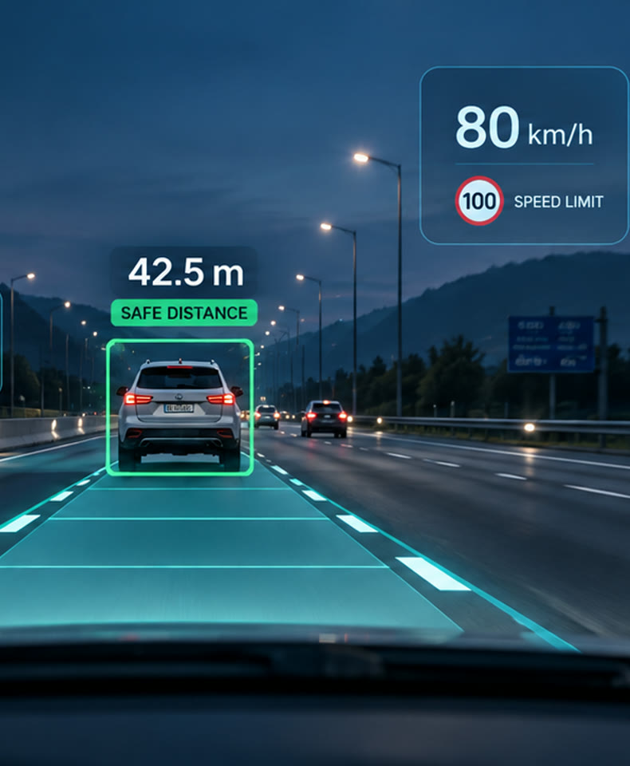
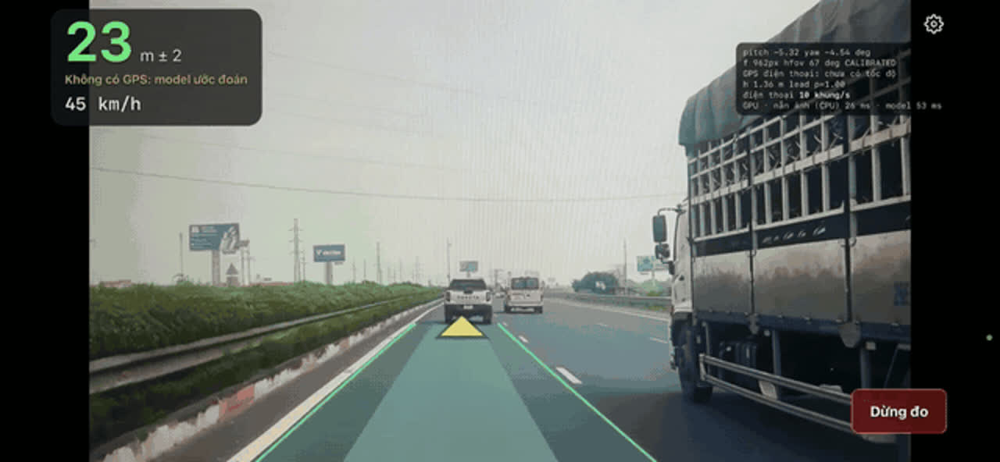
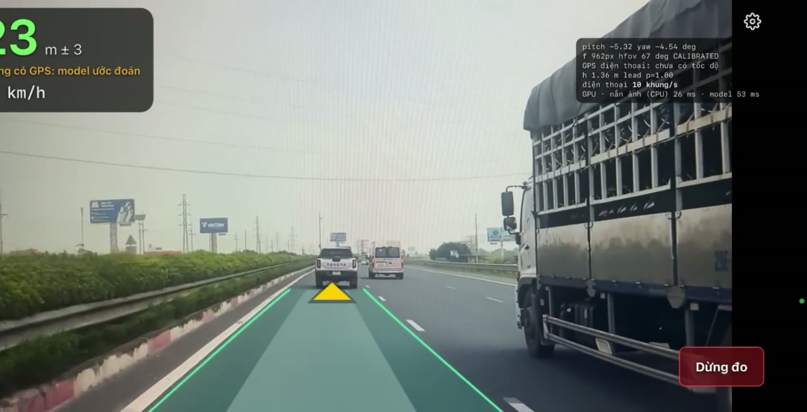
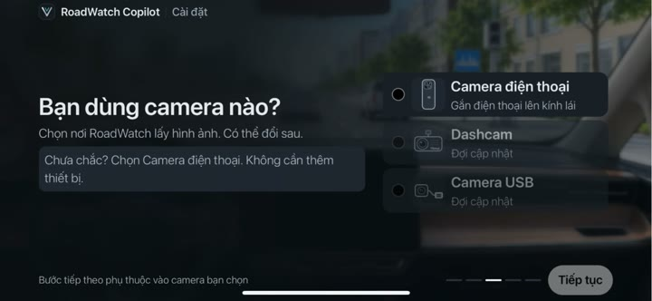
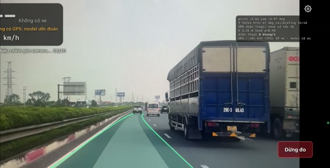
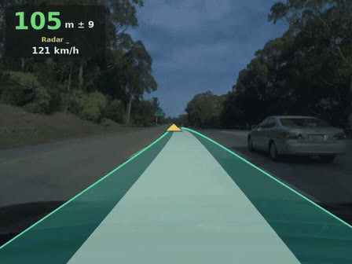
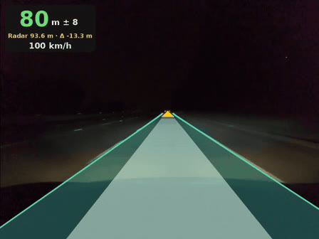
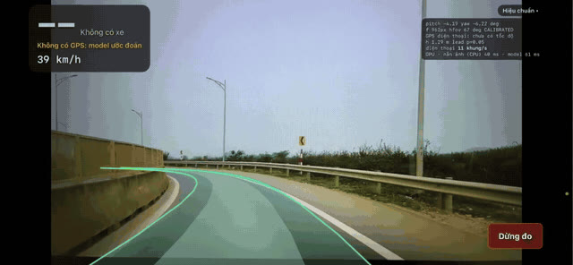
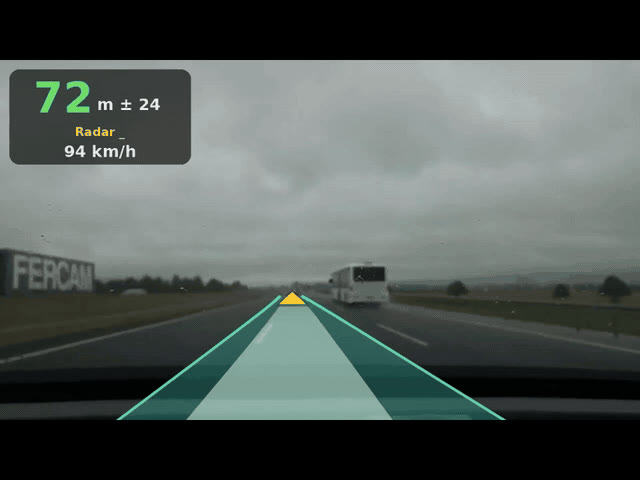

P-014 · VINUNI AI20K
Trợ lý giữ khoảng cách an toàn, chạy offline ngay trên điện thoại
Computer Vision
Edge AI · Offline
Cảnh báo tiếng Việt
Đề DEV-04 · AI Thiết bị (VinFast)
TỔNG QUAN
01
02
03
04
05
06
RoadWatch Copilot · P-014
02 / 15
01 · BÀI TOÁN
Thông tư 38/2024/TT-BGTVT, Điều 11
60 km/h
35 m
60–80 km/h
55 m
80–100 km/h
70 m
100–120 km/h
100 m
Áp dụng khi đường khô ráo, tầm nhìn tốt. Dưới 60 km/h: tài xế tự giữ khoảng cách phù hợp.
Đoán 55–100 m khi đang chạy nhanh rất khó với tài xế mới
Tích hợp phức tạp, gắn chặt một xe, khó mang sang xe khác
Đúng những đoạn cao tốc cần cảnh báo nhất
RoadWatch Copilot · P-014
03 / 15
01 · NGƯỜI DÙNG
Chưa quen ước lượng khoảng cách ở tốc độ cao
Cần “người kèm lái” nhắc đúng lúc
Hành trình dài, nhiều đoạn sóng yếu
Cần cảnh báo ổn định, không cần mạng
Muốn nâng cấp ADAS mà không can thiệp vào xe
Cần lắp nhanh, mang sang xe khác
Chỉ cần điện thoại + giá đỡ kính lái — không đi dây, không đọc dữ liệu xe
RoadWatch Copilot · P-014
04 / 15
02 · GIẢI PHÁP

Không cần mạng
Chạy trên điện thoại
Ảnh không rời khỏi máy
Ảnh chụp từ app chạy thật trên điện thoại, đang tắt mạng
Tự căn chỉnh theo góc đặt máy
Một model chạy thẳng trên điện thoại
Bám theo làn, kể cả khi vào cua
Tính tới cản trước, số không nhảy loạn
Giọng tiếng Việt, chỉ nhắc khi cần
RoadWatch Copilot · P-014
05 / 15
02 · CÁCH DÙNG

Tiến gần xe tải, số đo cập nhật liên tục:
37 m
→
29 m
→
20 m
→
15 m
1
Chế độ máy bay vẫn chạy
2

Điện thoại gắn kính lái
3
Tới cản trước, tiêu cự
4

Tự hiệu chuẩn rồi đo
Ảnh cắt từ video demo offline (video/offline.mp4)
06 / 15
02 · CẢNH BÁO
Ví dụ khi xe chạy 90 km/h — khoảng cách tới xe phía trước:
0 m
35 m
70 m · luật
88 m
100 m
NHẮC SỚM
< 88 m
“Xe phía trước đang gần lại”
CẢNH BÁO
< 70 m
“Chú ý giữ khoảng cách xe phía trước”
KHẨN CẤP
< 35 m
Ba tiếng bíp · hoặc khi khoảng cách giảm nhanh
Chống báo giả: mỗi mức phải giữ đủ 0,5 s mới phát · không nhắc khi khoảng cách đang giãn ra
RoadWatch Copilot · P-014
07 / 15
03 · ĐIỂM KHÁC BIỆT
DISTANCE AWARENESS
100 m
Tầm đo tới 100 m, so ngay với mức luật TT 38 ở tốc độ hiện tại
PORTABLE ADAS
0 dây
Không đọc dữ liệu xe, chuyển sang xe khác trong vài giây
OFFLINE EDGE AI
< 90 MB
Model chạy trên GPU điện thoại, hình ảnh không gửi đi đâu
Giữ khoảng cách đúng luật — chỉ với chiếc điện thoại trong túi bạn.
RoadWatch Copilot · P-014
08 / 15
04 · KẾT QUẢ THỰC ĐỊA TẠI VIỆT NAM
83,0%
số đo khoảng cách lệch ≤ 15% so với radar VinFast VF8 — sai số nhỏ, đủ để cảnh báo an toàn
1.257
frame thực địa được chấm
0,70 m
sai số trung vị ở 10–20 m
~28 phút
Ocean Park 2 + cao tốc HN–HP
Nguồn: eval/radar_vinhomeocp/field_metrics.json · radar đọc qua OCR màn hình
09 / 15
04 · ĐỘ CHÍNH XÁC
Tỷ lệ số đo lệch ≤ 15% so với radar, theo khoảng cách
89,8%
83,6%
88,0%
71,7%
60,9%
55,8%
10–20 m
20–40 m
40–60 m
60–80 m
80–100 m
≥ 100 m
0,70 m
sai số trung vị ở 10–20 m
Thiên về an toàn
Model báo gần hơn radar trung bình 2,62 m → cảnh báo sớm hơn, không trễ
2,70 m
sai số trung vị trên 1.257 frame
Thực địa Ocean Park 2 + cao tốc HN–HP · radar VF8 · ≥ 100 m nằm ngoài tầm đo
10 / 15
04 · SO SÁNH
Điểm F1 · càng cao càng tốt
RoadWatch
0,946
Đoán một số cố định (không nhìn ảnh)
0,742
Cách truyền thống: khung xe + hình học
0,407
Càng thấp càng tốt
RoadWatch
2,73 m
Đoán một số cố định (không nhìn ảnh)
16,23 m
83,7%
tình huống mẫu xử lý đạt, so với 32,7% của cách truyền thống
Bộ dữ liệu Comma2k19 (3.778 frame, 300 tình huống mẫu) · số đo cũ, sẽ chạy lại trên model hiện tại
11 / 15
04 · HIỆU NĂNG
~70 ms
xử lý mỗi khung hình
12–15
khung hình / giây
<90 MB
tải một lần, dùng offline
37 ms
model AI trên iPhone 13
12.000
Tận dụng GPU của điện thoại, chạy ổn định suốt hành trình
Chạy trên GPU điện thoại
Mở như app, không cần cài
Không gửi ảnh lên mạng
Hiệu năng điện thoại đo một lần ngày 17/10/2026, chế độ mất mạng
12 / 15
05 · DEMO

Ban ngày

Ban đêm

Đường cong

Trời mưa · minh họa
80 m
Khoảng cách tới xe trước ± độ bất định
Thảm làn: vùng xe mình sẽ đi
Δ
So với radar khi có nhãn
Video đầy đủ trong repo: video/*.gif · video/offline.mp4
13 / 15
06 · HƯỚNG TƯƠNG LAI
01
Tối ưu nhiệt ở cụm màn hình và cụm camera của điện thoại
02
Nhiều điện thoại, nhiều tiêu cự camera để model học tốt nhất
03
Thêm tình huống đặc biệt: mưa, đêm, chạng vạng…
04
Ước tính thời gian tới va chạm để cảnh báo sớm hơn
RoadWatch Copilot · P-014
14 / 15
06 · NHÓM
C
Model, đánh giá, định hướng kỹ thuật
K
Tự hiệu chuẩn camera, video demo
T
Triển khai server, đưa model lên điện thoại
L
Thiết kế giao diện
Cảm ơn! Giữ khoảng cách đúng luật — chỉ với chiếc điện thoại.
Chỉ cảnh báo · tài xế luôn điều khiển xe
VinUni AI20K Build Phase · Đề DEV-04 · AI Thiết bị (VinFast)
15 / 15